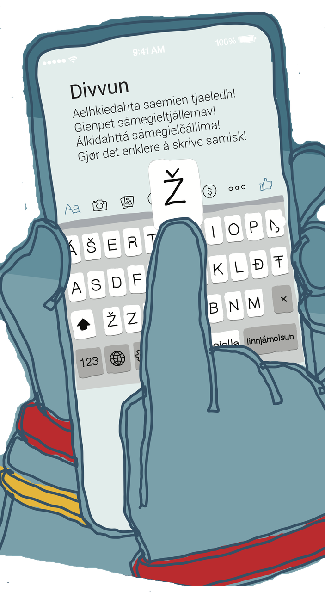
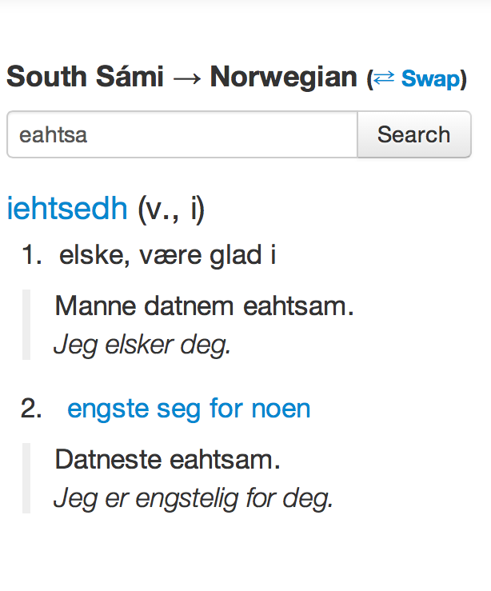
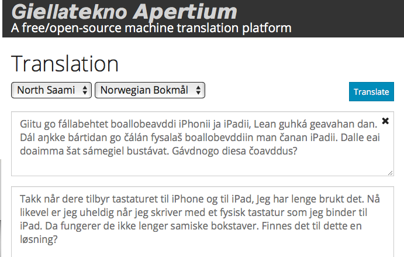

Indigenous language technology

Mobile phone keyboard
No language is too hard for language technology
The Sámi languages have a complex grammatical structure and do not have access to huge text collections. This situation is shared with most indigenous languages. Still, Divvun and Giellatekno have built all tools below for most of the Sámi languages.
Tools (in order of increasing complexity)
Computer keyboards
Mobile phone keyboards
Word analysers
Dictionaries with grammars
Spellcheckers
Mobile phone keyboards w/ spelling checkers
Word form generation
Hyphenation
Language learning tools
Grammar checkers
Machine translation
Computer tools mainly exist for a few handfuls of majority languages today. The rest of the world’s 7,000 languages are without access to such tools. This excludes these languages from the digitalised modern society as the technical solutions used by the majority languages are not available for them. This digital divide threatens the existence of many languages — languages without these tools will be digitally non-existent.

South Saami dictionary
The technology and infrastructure behind the linguistic tools above are free and open source. Anyone is now free to do what Divvun and Giellatekno have done. Using this infrastructure, other communities are creating similar tools for indigenous languages in Canada and Russia. And what's best, we all cooperate on improving the common infrastructure and tools.
Different language communities and users need different tools, for various reasons. Smartphones and social media, however, require some computer processing of any language. Being able to type our languages on all devices is the first — and also an easy — step. Language technology may strengthen literacy and the use of the language in new domains.
But there is no silver bullet — good models and tools require a lot of work. This work must be done by each language community (in cooperation with linguists and programmers).

Machine translation from North Saami to Norwegian Bokmål
How to do it?
The open and free GiellaLT infrastructure developed and used by Divvun and Giellatekno provides a language independent framework for building a grammatical model of each language. The infrastructure takes the model and turns it into computer programs and useful tools for the language community. All the technical labour to make the tools work in MS Office, Windows, MacOS and elsewhere is done separately from the linguistic work. Each language community can then concentrate on developing the grammatical model.